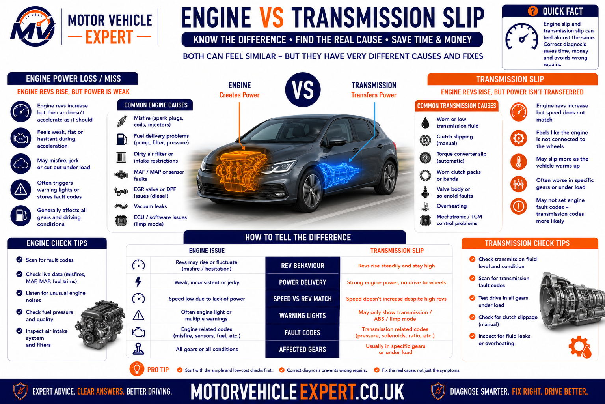
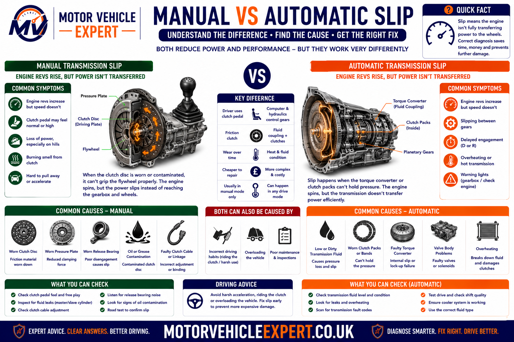
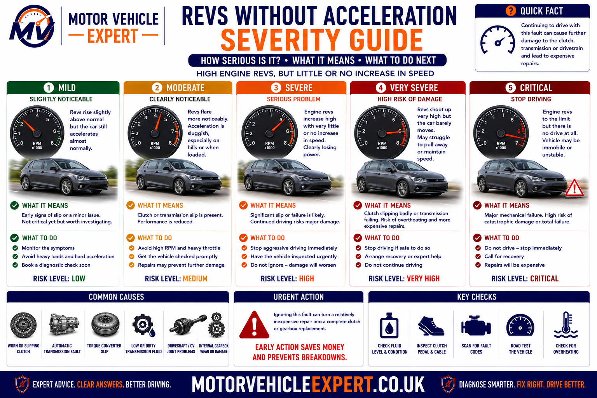
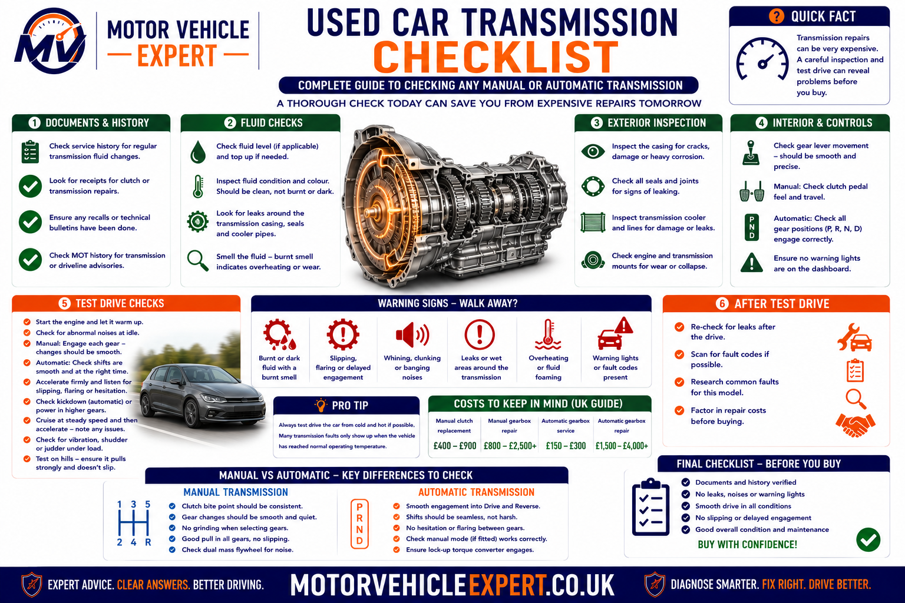
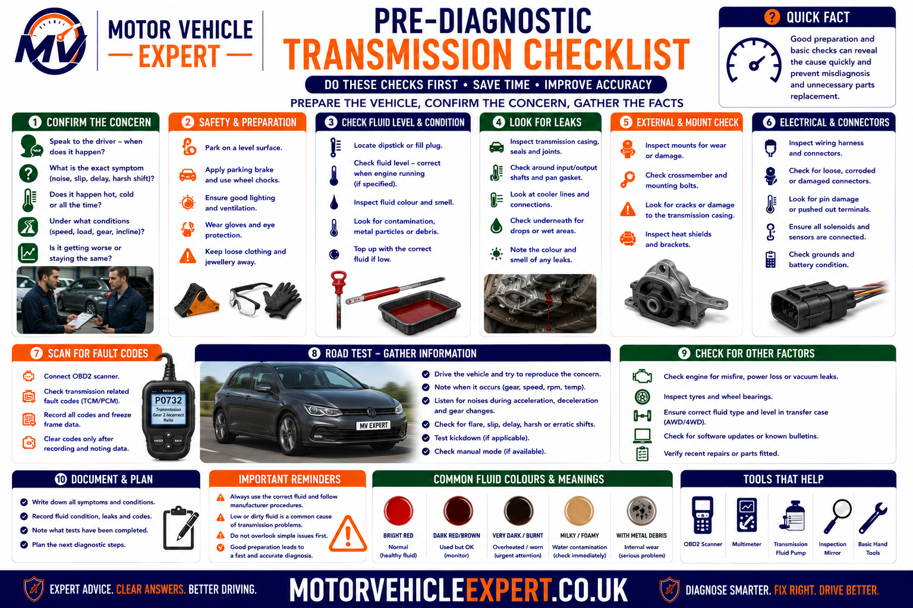

Why Does the Car Rev Without Accelerating Properly?
When engine speed rises but road speed does not increase in proportion, power is usually being lost somewhere between the engine and the driven wheels. On a manual car, a slipping clutch is the most common cause. On an automatic, the fault may involve hydraulic pressure, internal clutch packs, the torque converter, valve body, solenoids, a CVT or a dual-clutch system.
Driveshaft, CV-joint, differential and four-wheel-drive coupling faults can also prevent torque reaching the wheels correctly. Engine limp mode, low turbo boost and misfires may make a car feel slow, but they normally restrict engine output rather than allowing the revs to rise freely without matching acceleration.
Manual Car
Revs rising without matching road speed commonly indicates a worn, overheated or oil-contaminated clutch that can no longer transfer full engine torque.
Automatic Car
Gear flare, delayed engagement or weak drive may point to fluid pressure, internal wear, torque-converter problems or an electronic transmission-control fault.
Drivetrain Failure
A failed driveshaft, stripped spline, damaged CV joint or differential fault can interrupt power transfer and may cause sudden rather than gradual loss of drive.
Watch the relationship between the rev counter and speedometer. If engine speed climbs quickly while road speed barely changes, investigate the clutch, transmission and drivetrain. If the engine itself struggles to gain revs, investigate engine output, limp mode, airflow, fuel, ignition and turbocharger performance.
How Engine Power Reaches the Wheels
Engine revs describe how quickly the crankshaft is rotating. Road speed describes how quickly the vehicle is travelling. During normal acceleration, both should increase together in a predictable relationship determined by the selected gear and transmission design.
When engine speed rises much faster than road speed, some of the engine’s torque is being lost before it reaches the tyres. The lost energy is commonly converted into heat inside a slipping clutch, torque converter, internal transmission clutch pack or another failing power-transfer component.
1. Engine Produces Torque
Combustion turns the crankshaft and creates the torque required to move the vehicle.
2. Coupling Transfers Torque
A manual clutch, torque converter or automated clutch connects the engine to the transmission.
3. Gearbox Changes Ratio
The selected ratio changes the relationship between engine speed and the rotational speed delivered to the final drive.
4. Drivetrain Turns the Wheels
The differential, driveshafts, CV joints and wheel hubs deliver torque to the driven tyres.
Gradual Slip
Often develops through clutch wear, internal transmission wear or slowly deteriorating hydraulic pressure.
Sudden Loss of Drive
More likely to involve a driveshaft, CV joint, differential, clutch centre or major transmission failure.
Intermittent Flare
May involve fluid pressure, heat-related transmission faults, sticking solenoids, clutch contamination or electronic control errors.
A CVT may hold the engine at an efficient or powerful speed while road speed continues increasing. This can feel unusual without being faulty. Genuine slip is more likely where acceleration is weaker than normal, warning messages appear, engagement is delayed or the engine flares without useful vehicle response.
Understanding Engine Revs Versus Road Speed
The conditions under which rev flare appears can help separate a worn manual clutch, automatic transmission slip, a drivetrain failure and an engine-output fault being mistaken for slip.
Worse in Higher Gears
A worn manual clutch often slips first in fourth, fifth or sixth gear because it must transfer greater engine torque.
Worse Uphill
Hill climbing increases vehicle load and can expose clutch, transmission and torque-converter faults that are less obvious on level roads.
Worse When Hot
Automatic transmission slip may worsen as fluid temperature rises and internal leakage or friction wear becomes more significant.
Only During Gear Changes
Revs flaring between automatic shifts can indicate clutch-pack, valve-body, solenoid or hydraulic-pressure problems.
Sudden Bang and No Drive
A driveshaft, CV joint, differential or another drivetrain component may have failed suddenly.
Power Returns After Restarting
This pattern is more consistent with engine or transmission protection mode than permanent mechanical clutch slip.
| Observed behaviour | More likely cause | Useful next check |
|---|---|---|
| Revs flare in higher gears under load | Manual clutch slip | Controlled road test and clutch assessment |
| Revs flare between automatic shifts | Transmission pressure or internal clutch fault | Scan gearbox data and compare input and output speed |
| Delay when selecting Drive or Reverse | Hydraulic pressure, valve body or internal wear | Inspect fluid condition and transmission data |
| Sudden loss of drive with clunking | Driveshaft, CV joint or differential failure | Stop driving and inspect the drivetrain |
| Engine struggles to rev and warning light appears | Engine power fault or limp mode | Read engine fault codes and live data |
| One wheel becomes unusually hot | Dragging brake rather than transmission slip | Inspect the caliper, hose and parking brake |
Full-throttle testing creates additional heat and can turn a manageable clutch or transmission fault into complete loss of drive. Once strong slip is confirmed, avoid further load testing outside a controlled professional diagnosis.
Engine Power Fault or Transmission Slip?
Poor acceleration and transmission slip can feel similar from the driver’s seat, but engine-speed behaviour is normally different. Correctly separating these faults prevents unnecessary clutch or gearbox replacement.

Engine faults normally prevent the engine producing its expected torque. Clutch and transmission slip allow engine speed to rise while failing to convert that output into matching road speed.
More Likely When
- ✓ The engine struggles to gain revs.
- ✓ Misfiring or shaking is present.
- ✓ Black, blue or white smoke appears.
- ✓ The engine-management light is illuminated.
- ✓ Turbo boost or fuel pressure is low.
- ✓ Power temporarily returns after restarting.
More Likely When
- ✓ Engine speed rises quickly.
- ✓ Road speed increases slowly.
- ✓ The fault is worse uphill or under load.
- ✓ A burning friction smell develops.
- ✓ Automatic shifts flare or engage late.
- ✓ The engine otherwise sounds smooth and responsive.
Professional diagnosis can compare engine speed, transmission input speed, output speed, selected gear and wheel speed. This confirms whether the calculated gear ratio matches the gearbox’s actual behaviour.
Common Causes of Revs Rising Without Acceleration
The most likely fault depends on the transmission design, symptom pattern, warning messages, smells and whether the loss of drive appeared gradually or suddenly.
Worn Manual Clutch
Friction material and pressure-plate clamping force deteriorate until the clutch cannot hold the engine’s torque.
Oil-Contaminated Clutch
Engine or gearbox oil on the friction surfaces can cause slip even where the clutch plate still retains material.
Clutch Release Fault
Hydraulic or mechanical release components can prevent the clutch engaging fully after the pedal is released.
Automatic Clutch-Pack Wear
Internal friction plates can wear or burn, causing gear flare, weak drive and slipping when hot.
Valve-Body or Solenoid Fault
Incorrect hydraulic pressure can delay clutch application and allow the transmission to slip between ratios.
Torque-Converter Problem
Internal wear, lock-up clutch faults or poor hydraulic transfer can cause excessive revs, shudder or weak acceleration.
CVT Belt or Pulley Fault
Wear, pressure loss or incorrect fluid can prevent a CVT maintaining the intended ratio.
Dual-Clutch Fault
Worn clutch packs, actuators or mechatronic controls can cause hesitation, flare, judder or delayed engagement.
Low or Incorrect Fluid
Fluid-level, specification or condition problems can reduce lubrication and hydraulic pressure in applicable gearboxes.
Driveshaft or CV Failure
Broken joints, stripped splines or failed shafts can interrupt drive between the differential and wheels.
Differential or Transfer Fault
Internal gearing or four-wheel-drive coupling faults can prevent torque being distributed correctly.
Engine Limp Mode
Reduced engine torque can feel like transmission failure but normally prevents the engine revving freely under load.
A vehicle may require a complete clutch or gearbox, but similar symptoms can come from a hydraulic release fault, failed solenoid, low fluid pressure, damaged driveshaft or engine protection mode. The failure must be proven before major parts are authorised.
Manual Clutch Slip Explained
The clutch connects the engine flywheel to the gearbox input shaft. When the pedal is released, the pressure plate should clamp the friction disc firmly enough to transfer the engine’s full torque. Slip begins when the available clamping grip becomes lower than the torque being applied.
Worn Friction Material
The clutch disc gradually becomes thinner until the pressure plate can no longer clamp it effectively.
Weak Pressure Plate
Diaphragm-spring wear or heat damage can reduce the clamping force holding the clutch disc.
Overheated Friction Surfaces
Prolonged slipping can glaze or burn the clutch surfaces, reducing grip and accelerating further damage.
Signs of Manual Clutch Slip
- ✓ Revs rise under acceleration without matching speed.
- ✓ Slip is worse in higher gears.
- ✓ The fault becomes clearer uphill.
- ✓ A burning friction smell develops.
- ✓ The bite point may feel unusually high.
- ✓ Towing or carrying weight makes the symptom worse.
What the Garage Should Inspect
- ✓ Clutch pedal travel and return.
- ✓ Master and slave cylinder operation.
- ✓ Release bearing and fork movement.
- ✓ Engine and gearbox oil leaks.
- ✓ Dual-mass flywheel condition.
- ✓ Engine and gearbox mountings.
Continued hard acceleration generates heat and can damage the pressure plate, flywheel and surrounding components. A clutch that slips strongly in several gears should be repaired before normal road use continues.
How a Professional Garage Confirms Clutch Slip
A professional diagnosis should confirm that engine speed is increasing without proportional road speed and then establish why the clutch cannot transfer torque. The garage should not rely on one aggressive road test or replace the clutch without checking related components.

The process separates normal clutch wear from oil contamination, hydraulic release faults, installation problems and damaged supporting components.
1. Confirm the Complaint
Establish the gear, engine speed, road speed, gradient and load at which the fault occurs.
2. Perform a Controlled Road Test
Compare engine-speed rise with road-speed increase without repeatedly overheating the clutch.
3. Check Pedal and Release Operation
Inspect pedal travel, return, hydraulic operation, cable adjustment and release-mechanism behaviour.
4. Inspect for Leakage
Look for engine-oil, gearbox-oil or hydraulic-fluid leakage around the bellhousing.
5. Remove the Gearbox if Required
Inspect the friction disc, pressure plate, release bearing, seals and flywheel condition.
6. Identify the Root Cause
Determine whether wear, contamination, overheating, adjustment or component failure caused the slip.
7. Complete the Full Repair
Replace failed friction parts and repair any leak, hydraulic fault or damaged supporting component.
8. Verify Under Load
Confirm that engine speed and road speed rise proportionally after repair.
Deliberately trying to stall the engine against the clutch can create unnecessary heat and drivetrain stress. A controlled road test combined with mechanical inspection provides better evidence.
Clutch Contamination, Adjustment and Release Problems
Not every slipping clutch has simply reached the end of its normal service life. Oil contamination or a release mechanism that prevents full engagement can produce similar symptoms and must be corrected as part of the repair.
Rear Main Oil-Seal Leak
Engine oil can enter the bellhousing and contaminate the clutch friction surfaces.
Gearbox Input-Seal Leak
Transmission oil leaking towards the clutch can reduce friction and damage a replacement clutch if the seal is ignored.
Hydraulic Pressure Retained
A master cylinder, slave cylinder or restricted hydraulic circuit can prevent the clutch fully re-engaging.
Incorrect Cable Adjustment
On applicable vehicles, insufficient free play can hold the release mechanism partly applied.
Release Fork or Bearing Fault
Binding or damage can interfere with smooth engagement and create noise or inconsistent pedal feel.
Incorrect Installation
Wrong parts, fitting errors or failure to reset an applicable self-adjusting clutch can cause poor engagement.
| Clutch fault | Typical clue | Correct repair direction |
|---|---|---|
| Normal friction wear | Progressive slip with no major oil leak | Replace the clutch kit and inspect the flywheel |
| Engine-oil contamination | Oil inside the bellhousing or on the friction disc | Repair the engine seal and replace affected clutch parts |
| Gearbox-oil contamination | Transmission oil around the input shaft | Repair the input seal before fitting the new clutch |
| Hydraulic release fault | Pedal or engagement changes with temperature | Test master, slave and hydraulic return operation |
| Incorrect adjustment | Release mechanism held partly applied | Correct adjustment and inspect for heat damage |
Once oil has soaked into friction material, grip may remain inconsistent after the visible surface is cleaned. The leak should be repaired and contaminated friction components normally replaced.
Can a Dual-Mass Flywheel Cause This Symptom?
A dual-mass flywheel, commonly shortened to DMF, sits between the engine and clutch on many modern manual vehicles. Its internal springs and damping mechanism absorb combustion vibration before it reaches the gearbox.
A damaged DMF can cause rattling, vibration, judder and poor clutch operation. However, engine revs rising without matching road speed normally confirms that friction is being lost through the clutch or transmission rather than proving that the flywheel alone has failed.
Rattle at Idle
Excessive internal movement may create rattling or knocking around the bellhousing, particularly when the engine starts or stops.
Judder When Pulling Away
Uneven flywheel movement, heat damage or clutch contamination can cause vibration as drive first takes up.
Drivetrain Vibration
A worn damping mechanism may allow excessive torsional vibration to reach the gearbox and vehicle body.
Clunk During Shutdown
Excessive rotational free play can create a clunk or metallic knock as the engine stops.
Heat-Damaged Surface
Severe clutch slip can overheat the flywheel face and create hot spots, scoring or cracking.
Grease Leakage
Grease escaping from the internal flywheel mechanism can indicate deterioration or overheating.
What a Mechanic Assesses
- ✓ Rotational movement between the flywheel masses.
- ✓ Rocking or lateral movement.
- ✓ Heat spots, scoring and surface cracking.
- ✓ Grease leakage from the assembly.
- ✓ Rattling during startup and shutdown.
- ✓ Clutch judder and drivetrain vibration.
When Replacement Is More Likely
- ✓ Movement exceeds the permitted specification.
- ✓ Internal damping feels rough or inconsistent.
- ✓ Heat damage or cracking is visible.
- ✓ Grease has escaped from the assembly.
- ✓ Severe rattling or vibration is present.
- ✓ Reusing it could compromise the new clutch.
Gearbox removal provides access to both components. Reusing a damaged flywheel can cause judder, noise, poor engagement or premature clutch failure, while replacing a serviceable flywheel unnecessarily increases the repair bill.
Automatic Gearbox Slip Explained
A conventional automatic transmission uses hydraulic pressure, internal clutch packs, planetary gearsets and electronic controls to select ratios and transfer engine torque. Slip occurs when the intended clutch or braking element cannot apply firmly enough to hold the selected ratio.
The driver may notice engine-speed flare, delayed acceleration, delayed engagement of Drive or Reverse, harsh shifting or a transmission warning. Some faults appear only when the gearbox is hot because the fluid becomes thinner and internal hydraulic leakage becomes more significant.
Low Hydraulic Pressure
Pump wear, fluid loss, valve-body leakage or failed internal seals can prevent clutch packs applying with sufficient force.
Worn Clutch Packs
Internal friction plates can wear, glaze or burn, allowing engine speed to rise during gear changes or under load.
Valve-Body Fault
Worn bores, sticking valves or internal leakage can direct hydraulic pressure incorrectly.
Pressure-Control Solenoid
Electrical or mechanical solenoid faults can delay clutch application and cause harsh, missing or slipping shifts.
Incorrect or Degraded Fluid
The wrong specification or severely degraded fluid can affect friction behaviour, lubrication and hydraulic performance.
Transmission Overheating
Excessive heat damages fluid and friction material and may trigger reduced-power or transmission-protection modes.
Common Automatic Slip Clues
- ✓ Revs flare between gear changes.
- ✓ Drive or Reverse engages slowly.
- ✓ The fault becomes worse when hot.
- ✓ Gear changes feel harsh or inconsistent.
- ✓ A transmission warning appears.
- ✓ Burnt-smelling fluid or leakage is present.
Useful Gearbox Information
- ✓ Requested and actual gear.
- ✓ Input and output shaft speeds.
- ✓ Calculated transmission ratio.
- ✓ Clutch slip or adaptation values.
- ✓ Transmission-fluid temperature.
- ✓ Solenoid and pressure-control commands.
Correct fluid level and condition are important, but severely worn clutch packs, failed seals, damaged gears and major hydraulic faults require mechanical repair. Diagnosis should establish whether the fluid problem caused the slip or whether the fluid has been damaged by an existing failure.
Torque-Converter Faults and Weak Acceleration
A torque converter transfers engine power into many conventional automatic transmissions using fluid movement. It also multiplies torque at low speed and normally uses an internal lock-up clutch to improve efficiency once the vehicle is moving.
Torque-converter faults can cause excessive engine speed, weak initial drive, shudder, overheating or poor lock-up operation. These symptoms can overlap with internal gearbox slip, making transmission data and pressure testing important.
Lock-Up Clutch Slip
A worn converter clutch can fail to hold at cruising speed, causing rev fluctuation, heat and reduced efficiency.
Stator or One-Way Clutch Fault
Poor torque multiplication can make the vehicle feel weak when pulling away despite rising engine speed.
Internal Bearing Damage
Bearing or turbine damage may create whining, grinding, vibration or metal contamination.
Converter Shudder
Lock-up clutch vibration can feel like driving over a rough surface during light acceleration.
Excessive Heat
Continuous converter slip raises fluid temperature and can damage the wider transmission.
Contaminated Fluid Circuit
Debris from a failed converter can circulate through the valve body, cooler and transmission.
| Torque-converter symptom | Possible cause | Diagnostic direction |
|---|---|---|
| Weak pull-away performance | Poor torque multiplication | Compare stall behaviour and transmission data |
| Revs fluctuate at cruising speed | Lock-up clutch slip | Monitor commanded and actual converter lock-up |
| Shudder during light acceleration | Lock-up clutch vibration or fluid issue | Check fluid specification, adaptation and slip data |
| Whining or grinding noise | Internal converter or pump damage | Inspect pressure, fluid and debris condition |
| Repeated overheating | Excessive converter or transmission slip | Check cooler flow and identify the slipping element |
When a torque converter or automatic gearbox fails internally, friction material and metal debris can enter the cooler and pipes. Reusing a contaminated cooler circuit can damage the repaired or replacement transmission.
CVT and Dual-Clutch Gearbox Faults
Not every automatic transmission operates in the same way. Continuously variable transmissions and dual-clutch gearboxes use different components, controls and diagnostic methods. Their normal behaviour must be understood before genuine slip is diagnosed.
CVT Operation and Faults
A CVT changes ratio continuously rather than selecting fixed gears. Under hard acceleration, engine speed may rise and remain steady while road speed builds. This can be normal.
- ✓ Steel belt or chain wear.
- ✓ Pulley surface damage.
- ✓ Hydraulic-pressure loss.
- ✓ Stepper motor or control fault.
- ✓ Incorrect or degraded CVT fluid.
- ✓ Bearing noise or overheating.
DCT Operation and Faults
A dual-clutch transmission uses separate clutch systems for odd and even gears. Gear selection is automated by hydraulic or electric actuators and a mechatronic control unit.
- ✓ Dry or wet clutch-pack wear.
- ✓ Clutch adaptation outside limits.
- ✓ Mechatronic or actuator failure.
- ✓ Hydraulic accumulator faults.
- ✓ Judder during pull-away.
- ✓ Delayed or missing gear engagement.
Normal CVT Behaviour
Engine revs may remain high and steady while vehicle speed increases smoothly.
Likely CVT Fault
Road speed responds poorly, judder or whining develops, warning messages appear or the ratio becomes unstable.
Likely Dual-Clutch Fault
Pull-away judder, clutch flare, delayed engagement, overheating or repeated gearbox warnings are present.
CVTs, wet dual-clutch gearboxes and conventional automatics may require completely different fluids. An incorrect fluid can alter friction behaviour, damage components and create further transmission faults.
Driveshaft, CV-Joint and Differential Failures
A clutch and gearbox may transfer torque correctly while a failed component farther along the drivetrain prevents that torque reaching the wheels. These faults often cause sudden loss of drive rather than the progressive flare associated with clutch wear.
Broken Driveshaft
A shaft can fracture or disconnect, leaving the engine and gearbox operating without driving the vehicle correctly.
Stripped Shaft Splines
Worn or damaged splines can rotate without transferring torque through the hub or differential.
Failed CV Joint
Severe joint failure can interrupt drive and may follow a period of clicking, vibration or clunking.
Differential Failure
Damaged gears, bearings or internal splines can cause noise, metal debris and partial or complete loss of drive.
Transfer Case Fault
Four-wheel-drive vehicles may lose drive through failed gears, chains, bearings or internal clutch systems.
Four-Wheel-Drive Coupling
Electronic or hydraulic coupling faults can prevent torque reaching the intended axle.
More Like Clutch or Transmission Slip
- ✓ The symptom worsens progressively.
- ✓ Revs flare under load.
- ✓ A burning smell develops.
- ✓ Drive remains present at light throttle.
- ✓ No sudden mechanical bang occurred.
More Like a Drivetrain Breakage
- ✓ Drive disappears suddenly.
- ✓ A bang, clunk or grinding noise occurs.
- ✓ The vehicle will not move in any gear.
- ✓ A shaft or joint visibly moves abnormally.
- ✓ Oil leakage or broken casing is present.
A broken shaft or damaged differential can move unexpectedly, damage surrounding components or leave the vehicle stranded in traffic. Arrange recovery rather than repeatedly attempting to engage a gear.
Limp Mode or Genuine Clutch and Gearbox Slip?
Limp mode is a protective strategy used by engine and transmission control systems after a serious or implausible fault is detected. It may restrict engine torque, throttle response, turbo boost or available gears.
This can make a car accelerate poorly, but it is not the same as mechanical slip. In limp mode the engine is usually prevented from producing normal power. During true slip, the engine may rev freely while the vehicle fails to convert that output into road speed.
Engine Limp Mode
Throttle, fuel or boost may be restricted after an engine, sensor, emissions or turbocharger fault.
Transmission Protection Mode
The gearbox may hold one ratio, limit torque or disable certain functions after pressure, temperature or electrical faults.
Mechanical Slip
Friction or hydraulic holding force is physically insufficient to transfer the available torque.
| Diagnostic clue | Limp mode | Mechanical slip |
|---|---|---|
| Engine response | Power and revs often restricted | Engine may rev freely |
| Road-speed response | Slow because engine torque is limited | Slow despite rising engine speed |
| Warning lights | Commonly present | May be absent on a manual clutch |
| Effect of restarting | May temporarily restore performance | Mechanical slip normally remains |
| Burning smell | Not typical unless another fault exists | Common with severe friction slip |
| Diagnostic evidence | Fault codes and reduced-power commands | Incorrect speed ratio or loaded clutch slip |
Stored codes, freeze-frame information and transmission data may show why protection mode was activated. Clearing this evidence before diagnosis can make an intermittent fault harder to reproduce.
Burning Smell When the Car Revs but Does Not Accelerate
A burning smell makes the fault more urgent because it suggests friction, fluid or another component is overheating. The source should be identified rather than assuming every burning smell comes from the clutch.
Burning Clutch Smell
A sharp friction smell after hill climbing or hard acceleration strongly supports manual clutch overheating.
Burnt Transmission Fluid
Overheated automatic-transmission fluid may smell acrid and indicate internal slip or cooling problems.
Burning Engine Oil
Oil leaking onto the exhaust can produce smoke and smell while also contaminating a clutch if the leak enters the bellhousing.
Dragging Brake Smell
A seized caliper or parking brake can make the car feel slow and produce intense heat near one wheel.
Electrical Smell
Overheated wiring, motors or control modules can create a hot plastic smell and require immediate investigation.
Rubber Contact Smell
A damaged mounting or loose component may allow a belt, tyre or rotating shaft to rub against another surface.
Urgent Warning Signs
- ! Smoke appears from the engine bay or beneath the car.
- ! The burning smell becomes severe.
- ! Drive reduces rapidly.
- ! A transmission-overheating message appears.
- ! One wheel becomes extremely hot.
- ! Grinding or heavy mechanical noise develops.
Record These Details
- ✓ Where the smell seems strongest.
- ✓ Whether it follows hill climbing.
- ✓ Whether smoke was visible.
- ✓ Which gear was selected.
- ✓ Whether a warning message appeared.
- ✓ Whether performance changed as the vehicle cooled.
Stop in a safe place, switch off the vehicle and arrange recovery. Continuing to drive can destroy the remaining clutch or transmission friction material and may create a fire risk where oil, wiring or another component is overheating.
Manual and Automatic Slip Compared
Manual and automatic vehicles can both produce rising engine speed with weak acceleration, but their symptoms, supporting evidence and repair methods differ significantly.

Manual clutch faults are usually confirmed through their load-related behaviour and physical inspection. Automatic transmission diagnosis relies more heavily on fluid condition, fault codes, hydraulic operation and speed-sensor data.
Typical Manual Slip Pattern
- ✓ Worse in higher gears.
- ✓ Worse uphill or under load.
- ✓ Burning clutch smell may appear.
- ✓ Bite point may feel high.
- ✓ Engine warning light may remain off.
- ✓ Repair normally requires gearbox removal.
Typical Automatic Slip Pattern
- ✓ Revs flare between shifts.
- ✓ Drive or Reverse may engage late.
- ✓ Fault may worsen when hot.
- ✓ Gearbox warning may appear.
- ✓ Fluid may smell burnt or contain debris.
- ✓ Specialist data and pressure testing may be needed.
| Diagnostic area | Manual transmission | Automatic transmission |
|---|---|---|
| Main friction component | Single clutch disc and pressure plate | Internal clutch packs or transmission belt system |
| Most useful symptom | Slip under load in higher gears | Gear flare, delayed engagement or incorrect ratio |
| Useful electronic data | Usually limited | Input speed, output speed, gear and adaptations |
| Common supporting fault | Oil contamination or release problem | Fluid pressure, valve body or solenoid fault |
| Typical repair direction | Clutch kit, seals and flywheel assessment | Service, control repair, internal repair or replacement |
| Cost exposure | Usually moderate to high | Can range from moderate to very high |
A conventional automatic, CVT, automated manual and dual-clutch gearbox may all be described as automatic by the driver, but they use different components, fluids, diagnostic procedures and repair strategies.
How a Garage Diagnoses Revs Rising Without Acceleration
A professional diagnosis must establish where power transfer is being lost. The technician should confirm the exact symptom, identify the transmission design and compare engine speed, gearbox behaviour and road speed before recommending major repairs.
Diagnostic fault codes are particularly useful on automatic, CVT and dual-clutch vehicles, but a code does not automatically prove that the complete gearbox has failed. Electronic evidence should be supported by a controlled road test, fluid assessment, hydraulic checks and mechanical inspection.
1. Confirm the Complaint
Establish whether the engine genuinely flares, which gear is selected and whether the symptom appears cold, hot, uphill or under heavy load.
2. Identify the Transmission
Confirm whether the vehicle uses a manual clutch, conventional automatic, CVT, automated manual or dual-clutch gearbox.
3. Inspect Basic Condition
Check fluid leakage, mountings, driveshafts, pedal operation, warning messages and visible damage before road testing.
4. Scan Relevant Modules
Read the engine, transmission, ABS and four-wheel-drive modules for stored, pending and historic faults.
5. Road Test With Live Data
Compare engine speed, input speed, output speed, selected gear, clutch status and wheel speeds while reproducing the fault.
6. Perform Physical Tests
Assess clutch engagement, hydraulic pressure, fluid condition, drivetrain movement and transmission operation as required.
7. Confirm the Root Cause
Determine whether the failure involves friction wear, pressure loss, electronic control, contamination or broken drivetrain hardware.
8. Verify the Repair
Repeat the original driving condition and confirm that engine speed and road speed now increase in the correct relationship.
Manual Vehicle Evidence
The technician should document the gear and load at which the clutch slips and inspect the complete release, sealing and flywheel systems.
Automatic Vehicle Evidence
Ratio errors, input and output speeds, adaptations, pressure commands and fluid condition should support the diagnosis.
Drivetrain Evidence
Shaft movement, spline damage, differential noise and wheel speed behaviour can expose a fault beyond the gearbox.
Ratio, pressure and solenoid codes can be caused by low fluid, wiring faults, valve-body problems, sensor errors or internal wear. The garage should explain which tests prove the recommended repair.
What a Mechanic Checks
The inspection should cover the complete route through which engine torque reaches the road. Focusing only on the clutch or gearbox can miss hydraulic, electrical and drivetrain faults that produce similar symptoms.
Engine Performance
Confirm that the engine produces normal torque and is not operating in limp mode or misfiring under load.
Clutch Controls
Inspect pedal travel, cable adjustment, hydraulic operation, release movement and signs of retained pressure.
Fluid Level and Condition
Where manufacturer procedures permit, assess transmission fluid level, colour, smell, specification and contamination.
Electronic Control
Check speed sensors, solenoids, actuators, wiring, adaptation values and transmission-control commands.
Driveshaft and Differential
Inspect CV joints, splines, shaft security, differential operation, transfer systems and associated leakage.
Mountings and Alignment
Failed engine or gearbox mountings can create excessive movement, harsh engagement and additional stress on shafts and joints.
Useful Diagnostic Data
- ✓ Engine speed.
- ✓ Transmission input speed.
- ✓ Transmission output speed.
- ✓ Requested and actual gear.
- ✓ Clutch and converter slip values.
- ✓ Fluid temperature and pressure commands.
- ✓ Individual wheel-speed signals.
Physical Inspection Areas
- ✓ Friction-disc and pressure-plate condition.
- ✓ Flywheel wear and heat damage.
- ✓ Oil and hydraulic-fluid leakage.
- ✓ Driveshaft and spline condition.
- ✓ Differential and transfer-case operation.
- ✓ Transmission-fluid debris.
- ✓ Cooler flow and contamination.
A professional repair recommendation should explain which component is slipping or broken, why it failed and whether seals, cooling systems, flywheels, actuators or supporting components also require attention.
How Serious Is a Car That Revs Without Accelerating?
Severity depends on how much drive remains, how quickly the symptom is worsening and whether heat, smoke, warning messages or mechanical noise are present. Even mild slip should be diagnosed because friction damage normally becomes worse rather than repairing itself.

Mild repeatable slip may allow planned workshop attention, while smoke, severe overheating, grinding or sudden loss of drive makes recovery the safer option.
Occasional Mild Flare
Lower SeverityThe symptom is slight, predictable and not accompanied by warning lights, smell, noise or overheating.
Repeatable Slip Under Load
Moderate SeverityRevs flare uphill, in higher gears or during normal acceleration, but usable drive remains.
Strong Smell or Warning
High SeverityBurning smells, gearbox warnings, overheating or rapidly worsening slip indicate increasing damage.
Little or No Drive
UrgentSmoke, grinding, complete loss of drive or acceleration too weak for traffic requires immediate action.
| Condition | Risk level | Recommended response |
|---|---|---|
| Mild flare only during heavy acceleration | Lower | Book diagnosis and avoid unnecessary load |
| Slip in normal driving or higher gears | Moderate | Arrange repair before the fault worsens |
| Delayed automatic engagement or gearbox warning | High | Limit use and obtain specialist diagnosis |
| Strong burning smell or transmission overheating | High | Stop driving and allow the vehicle to cool safely |
| Sudden bang followed by loss of drive | Urgent | Stop and arrange recovery |
| Smoke, grinding or almost no movement | Urgent | Switch off and recover the vehicle |
A slipping vehicle may still move on level roads but fail to accelerate when joining traffic, crossing a junction or climbing a hill. Predictable torque transfer is essential for safe road use.
Can You Keep Driving When the Car Revs but Will Not Accelerate?
A careful journey to a nearby garage may be possible where the symptom is mild, stable and predictable. Severe slip, sudden loss of drive, smoke, grinding or overheating makes continued driving unsafe and can greatly increase the final repair cost.
Do Not Continue Driving If...
- ! Little or no drive remains.
- ! Smoke appears.
- ! A strong burning smell develops.
- ! Grinding or heavy clunking is present.
- ! A transmission-overheating warning appears.
- ! The vehicle cannot accelerate safely into traffic.
- ! Fluid is leaking heavily beneath the vehicle.
A Short Journey May Be Possible If...
- ✓ Slip is mild and predictable.
- ✓ No smoke or strong smell is present.
- ✓ No grinding or major mechanical noise exists.
- ✓ Drive engages normally.
- ✓ No overheating warning appears.
- ✓ The vehicle remains safe in local traffic.
- ✓ The garage is nearby and expecting the car.
High loads create additional friction heat and can remove the remaining drive without warning. Recovery is safer where the journey would involve high-speed traffic, steep hills or unpredictable acceleration.
If performance returns after switching the vehicle off and on, the control system may have left limp mode temporarily. The underlying fault and stored diagnostic information still require investigation.
Can Clutch or Gearbox Slip Fail an MOT?
The ordinary UK car MOT does not assess the general mechanical condition of the engine, clutch or gearbox. Clutch slip or internal gearbox slip is therefore not normally a standalone MOT failure.
The fault may nevertheless exist alongside defects that are included in the inspection. Unsafe driveshaft components, serious fluid leakage, relevant warning lights, emissions faults or other roadworthiness problems may affect the result.
Clutch Slip Alone
Not Normally a Direct MOT ItemThe vehicle may pass the MOT while still having a worn or slipping clutch.
Unsafe Driveshaft Defect
May Cause MOT FailureDriveshaft, coupling or related defects may be assessed where they affect security or safe operation.
Serious Fluid Leakage
May Affect MOT ResultSignificant engine or transmission leakage can create an environmental, fire or road-safety concern.
Warning-Light Fault
Depends on the SystemApplicable engine, emissions or safety-system warnings can affect the test independently of transmission slip.
Emissions Problem
Can Cause FailureAn engine fault mistaken for transmission slip may also produce excessive petrol emissions or diesel smoke.
Valid MOT Certificate
Does Not Prove Gearbox HealthPassing the MOT does not confirm that a clutch, torque converter or transmission is in good condition.
A vehicle can hold a valid MOT certificate and still be unsafe because a serious fault developed afterwards or falls outside the general scope of the test. The driver remains responsible for keeping the vehicle roadworthy.
Typical Repair Costs When a Car Revs but Will Not Accelerate
Repair costs vary considerably because the symptom can come from a manual clutch, hydraulic system, driveshaft, automatic gearbox, CVT, torque converter or dual-clutch transmission. These broad UK ranges are intended for budgeting rather than as fixed quotations.
Professional Diagnosis
£60–£180May include a controlled road test, module scan, live-data analysis and initial mechanical inspection.
Clutch Hydraulic Repair
£120–£500Covers selected master-cylinder, slave-cylinder, pipe or bleeding repairs, depending on component access.
Clutch Replacement
£550–£1,300+Cost depends on vehicle design, labour time and whether a conventional or self-adjusting clutch is fitted.
Clutch With Dual-Mass Flywheel
£900–£2,000+Includes a clutch kit and replacement DMF where inspection shows the flywheel is outside specification.
CV Joint or Driveshaft
£180–£650+Price varies between an individual joint, complete shaft, intermediate bearing and manufacturer-supplied assembly.
Transmission-Fluid Service
£180–£500+Cost depends on fluid specification, filter design, sump type and the manufacturer’s filling procedure.
Solenoid or Valve-Body Repair
£400–£1,500+May involve individual solenoids, valve-body repair, reconditioning, programming and fluid replacement.
Torque-Converter Replacement
£800–£1,800+Gearbox removal, cooler cleaning and additional internal repairs can increase the final cost.
DCT Clutch or Mechatronic Repair
£700–£2,500+Costs vary between clutch packs, actuators, mechatronic units, adaptation procedures and internal damage.
CVT Repair or Replacement
£1,200–£3,500+Internal belt, pulley, bearing or hydraulic damage can require specialist rebuilding or complete replacement.
Gearbox Rebuild
£1,500–£3,500+The price depends on transmission design, internal damage, labour and availability of reconditioning parts.
Replacement Transmission
£2,000–£5,000+New manufacturer units can cost substantially more than used, reconditioned or specialist-remanufactured alternatives.
A complete estimate may need seals, flywheel inspection, fluid, filters, programming, adaptation, cooler cleaning, mountings and recovery. Compare quotations by scope rather than price alone.
Clutch, Gearbox and Drivetrain Repair Cost Comparison
The same driver complaint can result in very different repair bills. A confirmed diagnosis is essential before comparing prices or deciding whether the vehicle remains economically sensible to repair.
| Repair | Typical UK range | Usually required when | Important consideration |
|---|---|---|---|
| Diagnostic inspection | £60–£180 | The failed system has not been confirmed | Should include road-test and test evidence |
| Clutch hydraulic repair | £120–£500 | The release system prevents full engagement | Inspect the clutch for heat damage |
| Manual clutch replacement | £550–£1,300+ | Friction wear or pressure-plate failure is confirmed | Inspect seals and flywheel while accessible |
| Clutch and DMF replacement | £900–£2,000+ | The clutch and flywheel are outside specification | Do not replace a serviceable DMF unnecessarily |
| Driveshaft or CV-joint repair | £180–£650+ | A shaft, joint or spline has failed | Check gearbox and hub interfaces for damage |
| Transmission-fluid service | £180–£500+ | Correct servicing is due or fluid condition contributes | Cannot repair severe internal wear |
| Valve-body or solenoid repair | £400–£1,500+ | Hydraulic or electronic control is defective | Programming and adaptation may be required |
| Torque-converter replacement | £800–£1,800+ | Converter slip, shudder or failure is proven | Clean the cooler and inspect the gearbox |
| Dual-clutch repair | £700–£2,500+ | Clutch packs, actuators or mechatronics have failed | Correct setup and adaptation are essential |
| CVT repair or replacement | £1,200–£3,500+ | Belt, pulley, bearing or pressure damage is confirmed | Use a suitable transmission specialist |
| Automatic gearbox rebuild | £1,500–£3,500+ | Internal friction or mechanical damage is widespread | Compare warranty and rebuild scope carefully |
| Replacement transmission | £2,000–£5,000+ | Repair is unavailable or uneconomical | Confirm compatibility, coding and warranty |
A used gearbox may have unknown wear and a limited warranty. A properly rebuilt unit with documented replacement parts may provide better value where the vehicle is otherwise worth retaining.
What Affects Clutch and Transmission Repair Costs?
Two vehicles with similar symptoms can receive very different quotations. Vehicle layout, transmission design, labour access, supporting damage and the quality of replacement parts all affect the final bill.
Vehicle Layout
Transverse front-wheel-drive, longitudinal rear-wheel-drive and four-wheel-drive layouts require different dismantling and labour time.
Transmission Design
Manual, conventional automatic, CVT and dual-clutch systems use different components, tools, fluids and repair procedures.
Labour Access
Subframes, exhaust systems, transfer cases and tightly packaged engine bays can increase removal and refitting time.
Dual-Mass Flywheel
Replacing a worn DMF alongside the clutch can add several hundred pounds in parts cost.
Hydraulic Components
Concentric slave cylinders and internal release bearings are often replaced while the gearbox is removed.
Oil-Seal Repairs
Engine and gearbox seals may need replacement where oil has contaminated the clutch.
Internal Damage
Burnt clutch packs, damaged gears, bearings and metal debris make automatic-transmission repairs more extensive.
Programming and Adaptation
Mechatronic units, control modules and dual-clutch systems may require coding, calibration or clutch adaptation.
Cooler and Pipe Cleaning
Internal transmission failure may contaminate the cooler, hoses and fluid circuit with metal or friction debris.
New, Rebuilt or Used Parts
Component price, condition and warranty vary considerably between new, remanufactured and used assemblies.
Specialist Labour
Complex CVT, mechatronic and automatic gearbox work may require a dedicated transmission specialist.
Additional Faults
Worn mountings, damaged driveshafts, leaking coolers or engine faults may need correction at the same time.
Factors That Increase the Quote
- ✓ Dual-mass flywheel replacement.
- ✓ Concentric slave-cylinder replacement.
- ✓ Engine or gearbox oil-seal repair.
- ✓ Four-wheel-drive transmission layout.
- ✓ Subframe or exhaust removal.
- ✓ Genuine or premium clutch components.
Factors That Increase the Quote
- ✓ Torque-converter replacement.
- ✓ Extensive internal clutch-pack damage.
- ✓ Valve-body or mechatronic replacement.
- ✓ Cooler replacement or circuit cleaning.
- ✓ Specialist programming and adaptation.
- ✓ Limited availability of rebuild parts.
One garage may quote only for the main clutch or gearbox, while another includes seals, fluid, programming, cooler cleaning and supporting parts. A lower headline price may not represent the complete finished repair.
Should You Rebuild or Replace the Transmission?
Where an automatic, CVT or dual-clutch gearbox has major internal damage, the main options are specialist rebuilding, fitting a remanufactured unit, installing a used gearbox or buying a new manufacturer replacement.
Specialist Rebuild
The original transmission is dismantled, inspected and rebuilt with replacement friction, sealing and damaged mechanical components.
Remanufactured Gearbox
A previously rebuilt unit may reduce vehicle downtime and offer a defined exchange warranty.
Used Gearbox
A used unit may be cheaper initially but can have unknown mileage, maintenance history and internal wear.
| Option | Main advantage | Main risk | Best suited to |
|---|---|---|---|
| Repair selected component | Lowest cost where damage is limited | Other internal wear may remain | Valve-body, solenoid or isolated control faults |
| Rebuild original gearbox | Known unit and repair scope | Quality depends on specialist and replaced parts | Repairable casings and available rebuild components |
| Remanufactured exchange unit | Potentially faster installation | Rebuild quality and warranty vary | Vehicles where compatible exchange units exist |
| Used gearbox | Lower purchase price | Unknown history and future durability | Lower-value vehicles with carefully sourced units |
| New manufacturer gearbox | New components and strongest provenance | Highest purchase cost | High-value or specialist vehicles |
More Suitable When...
- ✓ The casing and major gearsets remain serviceable.
- ✓ Replacement components are available.
- ✓ The specialist documents the rebuild scope.
- ✓ A meaningful parts-and-labour warranty is provided.
- ✓ The vehicle’s value justifies a quality repair.
More Suitable When...
- ✓ The casing or multiple major assemblies are damaged.
- ✓ Rebuild parts are unavailable.
- ✓ Rebuild labour exceeds the replacement price.
- ✓ A compatible warranted unit is available.
- ✓ Vehicle downtime must be minimised.
Gearbox codes, final-drive ratios, electronic controls, software, bellhousing patterns and four-wheel-drive configurations can differ within the same model range. A physically similar unit may not operate correctly in the vehicle.
How to Reduce Clutch and Gearbox Repair Costs
The safest way to reduce costs is to diagnose the fault early and complete the correct supporting work while the transmission is already accessible. Delaying repairs or choosing parts without test evidence can turn a limited fault into a complete transmission failure.
Diagnose Before Replacing
Confirm whether the fault is the clutch, gearbox, hydraulic system, driveshaft or engine control before ordering parts.
Act on Early Slip
Early repair can reduce heat damage to flywheels, clutch drums, converters and other transmission components.
Repair Leaks at the Same Time
Replace accessible seals where leakage contaminated the clutch or threatens the repaired transmission.
Inspect the Flywheel Properly
Replace a damaged flywheel when necessary, but do not add the cost automatically if it remains within specification.
Use the Correct Fluid
Follow the exact specification, quantity, temperature and filling procedure required by the transmission manufacturer.
Compare Specialists
Obtain written quotations from garages experienced with the exact clutch or transmission design.
Check Warranty Scope
Confirm whether labour, fluid, programming, recovery and consequential failure are covered.
Clean the Cooler Circuit
Prevent debris from a failed automatic transmission damaging the repaired or replacement unit.
Keep Service Records
Document fluid services and repairs to protect warranty claims and improve the vehicle’s resale evidence.
Worth Paying for
- ✓ Proper fault diagnosis.
- ✓ Quality friction components.
- ✓ Required seals and hydraulic parts.
- ✓ Correct transmission fluid.
- ✓ Programming and adaptation.
- ✓ A written repair warranty.
Avoid These Shortcuts
- ! Replacing parts solely from a fault code.
- ! Reusing an oil-contaminated clutch.
- ! Ignoring a leaking seal during gearbox removal.
- ! Using unverified transmission fluid.
- ! Fitting an incompatible used gearbox.
- ! Choosing a repair without a meaningful warranty.
A complete quotation should state the parts, labour, fluid, seals, programming, adaptation, cooler work, VAT and warranty. This makes competing repair options easier to compare fairly.
Checking a Used Car for Clutch, Gearbox and Drivetrain Slip
A vehicle that revs without accelerating properly can require an inexpensive supporting repair or several thousand pounds of clutch, CVT, dual-clutch or automatic-transmission work. The fault should be diagnosed before purchase rather than accepted as normal behaviour or dismissed as a minor sensor problem.
Inspect the vehicle from a genuine cold start, test it after the transmission reaches normal operating temperature and compare engine speed with road speed under different loads. A short, low-speed road test may not reveal higher-gear clutch slip, heat-related automatic faults or torque-converter problems.

Test manual and automatic vehicles according to their actual transmission design, and obtain an independent specialist inspection where symptoms or service-history gaps create uncertainty.
Walk Away If...
- ! The vehicle has severe or repeated slip.
- ! Drive or Reverse engages after a long delay.
- ! Smoke or a strong burning smell appears.
- ! Grinding, heavy clunking or whining is present.
- ! Transmission-overheating warnings appear.
- ! The seller refuses an independent inspection.
- ! Fault codes were recently cleared without repair evidence.
Negotiate Only If...
- ✓ The exact failed component has been identified.
- ✓ A written repair quotation is available.
- ✓ The fault has not caused wider damage.
- ✓ The repair cost is reflected in the price.
- ✓ The vehicle is otherwise mechanically sound.
- ✓ A specialist can inspect it before purchase.
Good Signs
- ✓ Engine and road speed increase proportionally.
- ✓ Drive engages promptly and smoothly.
- ✓ No clutch or gearbox warning appears.
- ✓ No burning smell develops after the road test.
- ✓ Transmission servicing is documented.
- ✓ No relevant fault codes return.
Manual Test-Drive Checks
- ✓ Assess clutch engagement during a normal pull-away.
- ✓ Check for judder as drive first takes up.
- ✓ Compare revs and road speed in higher gears.
- ✓ Test moderate acceleration uphill where safe.
- ✓ Listen for flywheel rattling and drivetrain clunks.
- ✓ Check for a burning smell after the test.
Automatic Test-Drive Checks
- ✓ Select Drive and Reverse from a stationary position.
- ✓ Check for delayed or harsh engagement.
- ✓ Watch for engine-speed flare between shifts.
- ✓ Test after the transmission becomes warm.
- ✓ Check for shudder during light acceleration.
- ✓ Confirm that no warning message appears.
Service Documentation
Look for clutch invoices, transmission-fluid services, gearbox repairs, software updates and evidence that the correct fluid specification was used.
Diagnostic Records
Ask whether the vehicle has previously logged ratio, pressure, clutch-adaptation, temperature or transmission-control faults.
Repair Warranty
Recent clutch or gearbox work should have a clear invoice, repair scope, fitted-part details and transferable warranty where applicable.
CVTs and dual-clutch transmissions can feel different from a conventional automatic, but delayed engagement, warning messages, weak acceleration, severe judder or unexplained rev flare still requires investigation. Compare the vehicle with a known-good example where possible.
Pre-Diagnostic Clutch and Transmission Checklist
Recording accurate symptoms before the garage visit can reduce diagnostic time. These checks should remain observational and should not involve repeated full-throttle testing, working beneath an unsupported vehicle or opening a hot transmission system.

Record the circumstances surrounding the fault and provide the garage with photographs of warning messages or visible leakage where it is safe to do so.
1. Identify the Transmission
Confirm whether the vehicle is manual, conventional automatic, CVT, automated manual or dual clutch.
2. Record the Selected Gear
Note which gear or driving mode is active when the symptom appears.
3. Compare Revs and Speed
Record whether engine speed rises sharply while road speed changes slowly.
4. Note Vehicle Load
Record whether the fault is worse uphill, when hot, while carrying weight or during stronger acceleration.
5. Photograph Warnings
Capture engine, clutch, gearbox or overheating messages before restarting or clearing faults.
6. Note Smells and Noise
Record burning smells, whining, grinding, clunks, rattles and when they occur.
7. Check for Visible Leakage
Look for fresh fluid beneath the vehicle without crawling underneath or touching hot components.
8. Arrange Diagnosis
Provide symptom notes, service records, recent repair details and warning photographs to the technician.
Cold or Hot?
Record whether the symptom is present immediately after startup, only after driving or under both conditions.
Constant or Intermittent?
Explain whether every acceleration attempt is affected or the fault appears only in selected gears or conditions.
Recent Work
Mention clutch, gearbox, driveshaft, battery, software, fluid or engine repairs completed shortly before the symptom began.
Each slip event produces heat and further friction damage. Stop testing once the symptom is confirmed, particularly where smell, smoke, warnings or major loss of drive are present.
Explore the Clutch, Gearbox and Diagnostics Knowledge Centre
Revs rising without acceleration can overlap with sluggish performance, hesitation, juddering, clutch wear, limp mode and drivetrain faults. Continue through the related Motor Vehicle Expert guides below to compare symptoms, understand diagnostic evidence and plan repairs or used-car checks.
Clutch Symptoms and Repairs
Acceleration Symptoms
Gearbox and Drivetrain
Diagnostics and Fault Codes
Warning Lights and Controls
Used-Car Buying Checks
Sluggish acceleration usually means the engine or vehicle is slow to build speed. True transmission slip means engine speed rises without the expected road-speed increase. Describing the symptom accurately helps direct diagnosis towards the correct system.
Car Revs But Won’t Accelerate FAQs
These answers match the FAQPage structured data in the page head exactly.
Why does my car rev but not accelerate?
If engine speed rises without a matching increase in road speed, the vehicle may have manual clutch slip, automatic transmission slip, a CVT or dual-clutch fault, a torque-converter problem or a drivetrain fault preventing power reaching the wheels correctly.
Is clutch slip the most likely cause on a manual car?
Yes. On a manual car, a worn or contaminated clutch is one of the most common causes of engine revs rising without matching acceleration. The symptom is often worse in higher gears, uphill, when carrying weight or during hard acceleration.
Can an automatic gearbox slip?
Yes. An automatic transmission can slip because of low hydraulic pressure, degraded or incorrect fluid, worn internal clutch packs, valve-body faults, solenoid problems, overheating, torque-converter faults or internal mechanical wear.
Why is clutch slip worse uphill?
Driving uphill places greater load on the clutch and drivetrain. A worn clutch may transfer enough torque during light driving but begin slipping when the engine produces more torque and the vehicle requires more effort to accelerate.
Why is clutch slip more noticeable in higher gears?
Higher gears place greater load on the clutch because the engine must produce more torque to increase road speed. A worn clutch may therefore slip in fourth, fifth or sixth gear before the symptom becomes obvious in lower gears.
Can a burning smell mean the clutch is slipping?
Yes. A slipping clutch generates friction heat and can produce a strong burning smell, particularly after hill climbing, towing or hard acceleration. Smoke, severe smell or rapidly worsening slip requires urgent attention.
Can oil contamination make a clutch slip?
Yes. Engine oil or gearbox oil leaking onto the clutch friction surfaces can reduce grip and cause slip even where the friction plate is not completely worn out. The oil leak must be repaired as part of the clutch work.
Can a dual-mass flywheel cause revs without acceleration?
A worn dual-mass flywheel can contribute to judder, vibration, rattling and poor clutch operation, but engine revs rising without matching road speed usually indicates clutch or transmission slip. The flywheel should be inspected when the clutch is removed.
Can a driveshaft fault cause revs without acceleration?
Yes. A failed driveshaft, stripped spline, damaged CV joint or differential fault can prevent engine torque reaching the wheels. These faults may cause sudden loss of drive, clicking, clunking or grinding rather than gradual clutch-style slip.
Is limp mode the same as clutch or gearbox slip?
No. Limp mode deliberately limits engine or transmission output after a fault is detected. The engine often struggles to produce normal power, whereas true clutch or gearbox slip allows engine speed to rise while road speed fails to increase proportionally.
Can changing transmission fluid fix gearbox slip?
A correct fluid service may improve operation where fluid condition, level or specification is contributing to the fault, but it cannot repair severely worn clutch packs, damaged gears, a failed torque converter or major internal transmission damage.
Is it safe to drive when the car revs but will not accelerate?
Mild predictable slip may allow a careful journey to a nearby garage, but severe slip, smoke, a strong burning smell, grinding, transmission overheating, sudden loss of drive or acceleration too weak for traffic requires the vehicle to be stopped and recovered.
Can clutch or gearbox slip fail an MOT?
The ordinary car MOT does not test the general condition of the engine, clutch or gearbox, so clutch or gearbox slip is not normally a standalone MOT failure. Related testable defects such as unsafe driveshaft components, serious fluid leaks, emissions faults or applicable warning lights may still affect the result.
How much does it cost to repair a car that revs but will not accelerate in the UK?
Repair costs vary from around £60 to £180 for diagnosis and approximately £120 to £650 for selected hydraulic, electrical or driveshaft repairs, while clutch, dual-mass flywheel, torque-converter, CVT, dual-clutch or automatic transmission repairs can range from several hundred pounds to more than £3,000.
How Engine Power Reaches the Road
A vehicle accelerates only when engine torque passes successfully through every stage of the powertrain. The exact components differ between manual, conventional automatic, CVT, dual-clutch, front-wheel-drive, rear-wheel-drive and four-wheel-drive vehicles, but the basic principle remains the same.
When engine revs rise without matching acceleration, diagnosis must locate the point at which torque transfer is being lost. This may be at the clutch, torque converter, internal transmission, differential, driveshaft, CV joint or another final-drive component.
1. Engine
Combustion produces torque at the crankshaft. The engine must first be confirmed capable of producing normal power.
2. Flywheel or Flexplate
This connects the crankshaft to the clutch or torque converter and transfers engine rotation into the transmission system.
3. Clutch or Torque Converter
This coupling allows controlled engagement and transfers engine torque into the gearbox.
4. Transmission
The gearbox selects or varies ratios to balance acceleration, road speed and engine efficiency.
5. Final Drive
Final-drive gearing reduces rotational speed, increases wheel torque and directs power towards the differential.
6. Differential
The differential divides torque between the driven wheels while allowing them to rotate at different speeds when cornering.
7. Driveshafts and CV Joints
These components carry torque from the differential to the wheel hubs while allowing suspension and steering movement.
8. Wheels and Tyres
The tyres convert drivetrain torque into traction and vehicle movement at the road surface.
Manual Power Path
Engine → flywheel → clutch → manual gearbox → differential → driveshafts → wheels.
Conventional Automatic Path
Engine → flexplate → torque converter → automatic gearbox → final drive → driveshafts → wheels.
Four-Wheel-Drive Path
Power may also pass through a transfer case, prop shaft, centre coupling and additional differential before reaching all four wheels.
| Powertrain stage | Possible failure | Typical driver clue |
|---|---|---|
| Engine output | Misfire, low boost, fuel or limp-mode fault | Engine struggles to gain revs or produce torque |
| Manual clutch | Friction wear, contamination or low clamping force | Revs flare under load, especially in higher gears |
| Torque converter | Lock-up, stator or internal bearing fault | Weak pull-away, shudder or cruising-speed flare |
| Automatic transmission | Pressure loss, clutch-pack wear or valve-body fault | Delayed engagement or flare between gear changes |
| CVT or dual clutch | Belt, pulley, clutch, actuator or mechatronic fault | Judder, ratio instability or poor engagement |
| Differential or driveshaft | Broken gears, CV joint, shaft or stripped spline | Sudden loss of drive, clunking or grinding |
Replacing a clutch will not repair a broken driveshaft, and replacing a gearbox will not correct an engine operating in limp mode. Diagnosis should identify where the expected relationship between engine speed, transmission speed and wheel speed is first lost.
Car Revs But Won’t Accelerate: Key Takeaways
The relationship between engine speed and road speed provides the most important first clue, but the complete clutch, transmission and drivetrain system must be assessed before expensive parts are replaced.
What You Should Do
- ✓ Record the gear, load and temperature when the fault appears.
- ✓ Compare engine-speed rise with road-speed increase.
- ✓ Identify the exact transmission design.
- ✓ Read fault codes before clearing them.
- ✓ Check clutch controls, fluid condition and drivetrain parts.
- ✓ Ask for test evidence before approving major repairs.
- ✓ Repair leaks, cooling faults and contamination causes.
- ✓ Verify the repair under the original driving conditions.
What You Should Never Ignore
- ! Severe or rapidly worsening slip.
- ! Smoke or a strong burning smell.
- ! Transmission-overheating warnings.
- ! Grinding, banging or heavy clunking.
- ! Delayed or missing Drive and Reverse.
- ! Sudden loss of drive.
- ! Major engine or transmission-fluid leakage.
- ! Acceleration too weak for safe traffic conditions.
Manual Vehicles
Clutch slip is the leading possibility where revs flare in higher gears, uphill or under heavy load.
Automatic Vehicles
Input and output speeds, fluid condition, adaptations, hydraulic pressure and shift behaviour should guide diagnosis.
Sudden Loss of Drive
Driveshaft, CV-joint and differential failures must be considered alongside clutch and gearbox faults.
Stop repeatedly testing the vehicle once slip or loss of drive is confirmed. Arrange a structured diagnosis that identifies the exact failed system, checks for supporting damage and provides a complete written repair scope.
Diagnosing Revs Without Acceleration Correctly
A car that revs without accelerating is usually losing engine torque somewhere between the crankshaft and the driven wheels. On a manual vehicle, the most likely cause is clutch slip. On an automatic, the problem may involve fluid pressure, internal clutch packs, the valve body, solenoids, torque converter, CVT components or a dual-clutch control system.
Not every case requires a complete gearbox. Oil contamination, hydraulic release faults, incorrect fluid, failed actuators, driveshafts, CV joints, differentials and limp mode can create similar complaints. Accurate diagnosis should prove where engine speed and road speed stop following the expected relationship.
Mild slip should be repaired before heat causes wider damage. Smoke, a strong burning smell, grinding, transmission overheating or sudden loss of drive requires the vehicle to be stopped and recovered rather than repeatedly tested.
Continue through our confirmed live guides including Clutch Slipping Symptoms, Burning Clutch Smell, Clutch Replacement Cost UK, Car Feels Slow to Accelerate, Car Juddering When Accelerating, Does the MOT Check the Clutch?, Does the MOT Check the Gearbox? and Fault Codes Explained.
Together these articles form part of the Motor Vehicle Expert Diagnostics Knowledge Centre, helping UK motorists understand symptoms, compare repair risks, prepare for garage inspections and make safer used-car buying decisions.